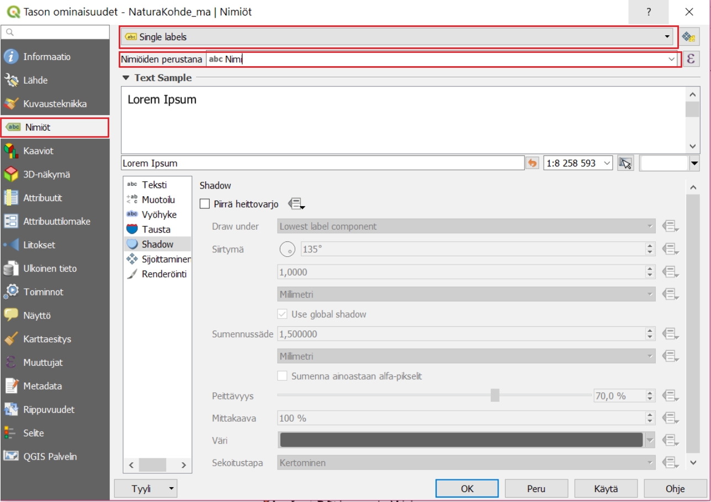
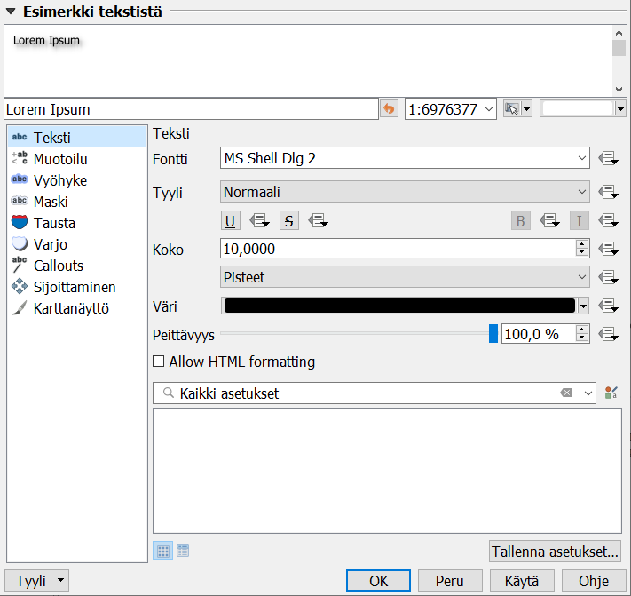
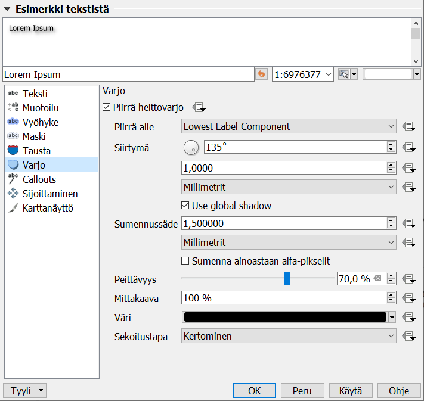
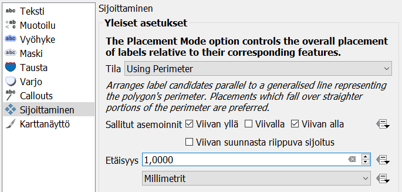
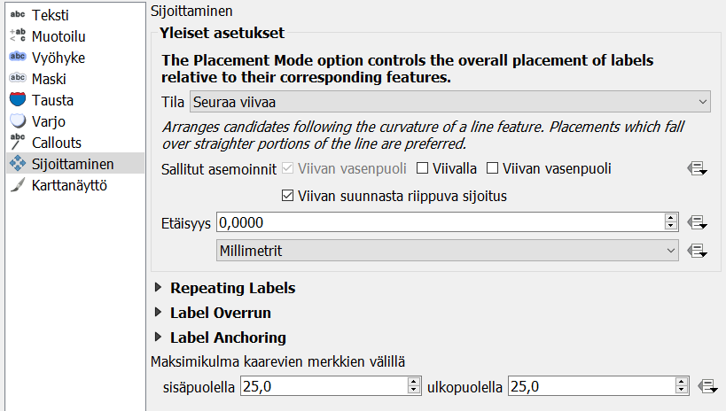
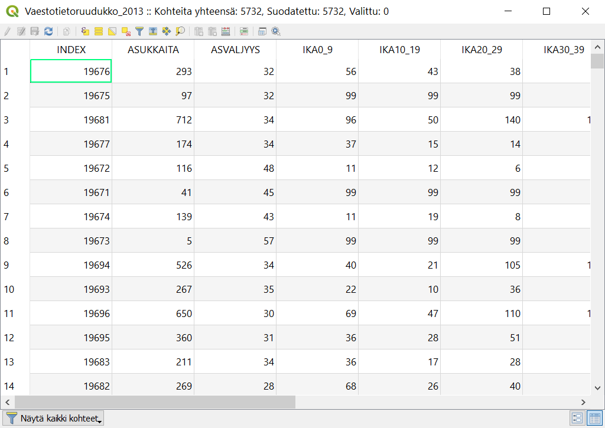
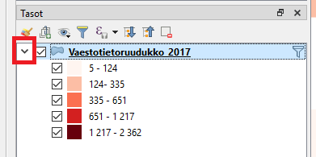
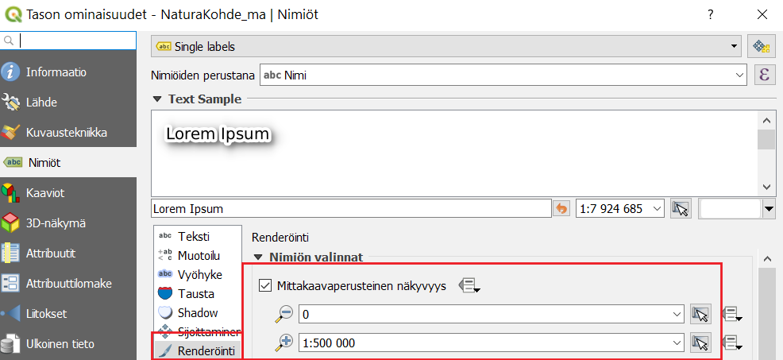

6 Harjoitus 4: Paikkatietoaineiston nimiöinti ja luokittelu
6.0.0.1 Harjoituksen sisältö
Harjoituksessa tutustutaan aineistojen nimiöinti- ja luokittelutoimintoihin.
6.0.0.2 Harjoituksen tavoite
Koulutettava oppii muodostamaan eri tyyppisille paikkatietokohteille tekstitykset ja oppii luokittelemaan paikkatietoaineistoja QGISin työkaluilla.
6.0.1 Valmistautuminen
Käynnistä QGIS-ohjelmisto. Avaa edellisen harjoituksen QGIS-projekti ja tallenna se nimellä (Projekti → Tallenna nimellä…) “QGIS_harjoitus_4”. QGIS käyttöliittymässä paikkatietokohteiden tekstitykseen viitataan termillä Nimiöt (englanninkielinen termi on “Labeling”). Avaa NaturaKohde_ma-aineisto (…/kurssihakemisto/SYKE/Natura2000/) uuteen projektiin. Avaa sitten Ominaisuudet-ikkuna ja valitse Nimiöt-välilehti. Valitse Single labels ja Nimiöiden perustana -alasvetovalikosta nimiöinnissä käytettävän sarakkeen nimi, esim. “Nimi”. Paina Käytä, niin kohteille syntyy nimiöt. Tämä nähdään nyt karttaikkunasta, johon nimiöt ovat jo päivittyneet:

6.0.2 Nimiöiden tyyli- ja yleisasetukset
Nimiöiden tekstien näkymistä kartalla voi määrittää monella eri tavalla. Alla kuvaukset QGISin nimiöiden muokkaamisen alateemoista:
Teksti Määritellään tekstin tyyli, väri ja muita yleisiä ominaisuuksia. Muotoilu Voit muodostaa useampirivisiä tekstejä, keskittää tekstiä ja määritellä lukujen muotoa. Vyöhyke Luodaan tekstiä korostavat puskurit (tekstin reunukset). Tausta Tekstin taustalle voi piirtää suorakulmion tai muun muodon. Varjo Teksteille voidaan muodostaa varjo. Sijoittaminen Määrittelee tekstien sijoittumista kohteiden suhteen. Piirtäminen Määrittelee tekstien mittakaavarajoja ja muita tekstien näkyvyyteen liittyviä asioita.
6.0.2.1 Nimiön tekstityyli
Nimiöiden tekstien tyyleille voit asettaa esimerkiksi haluamasi fontin, tyylin ja koon. 
Kokeile erilaisia tekstityylejä. Kokeile nimiöiden varjostamista, minkä avulla voimme korostaa nimiöitä taustalla olevista muista karttaelementeistä. Valitse Varjo-alateema ja rastita sitten Piirrä heittovarjo. Paina Käytä, jotta näkisit tulokset kartalla. Kokeile vaihtaa asetuksia kuten siirtymä, sumennussäde, peittävyys sekä väri, ja katso miten ne vaikuttavat nimiöinnin varjoon. Huomaat muutokset kartalta tai Esimerkki tekstistä -kentästä.

Toinen työkalu tekstin korostamiseen on tekstipuskuri. Valitse Vyöhyke-alateema ja lisää tekstille haluamasi puskuri rastimalla Piirrä tekstivyöhyke. Näin saat nimiöt erottumaan kartasta vielä paremmin. Kokeile erilaisia puskurin kokoja, värejä ja läpinäkyvyyttä.
Avaa vielä Sijoittaminen-alateema ja valitse Using perimeter (käyttäen kehää). Valitse Sallitut asemoinnit -kohdassa Viivan alla. Huomaa, että sallitut asemoinnit-kohdassa tulee aina olla vähintään yksi kohta valittuna. Jos useampi kohta on valittu, QGIS valitsee automaattisesti parhaan vaihtoehdon jokaiselle kohteelle. Paina OK, ja huomaa, että nyt nimiöt seuraavat monikulmioiden rajoja.


Tulos voi näyttää oudolta, etenkin jos karttaikkunan mittakaavaa on asetettu ison alueen kattavaksi. Lähennä karttaa, jotta nimiöt näkyisivät johdonmukaisemmin ja pohdi, missä tapauksessa tämänkaltainen nimiöinti olisi sopivinta.
Etsi vielä Sijoittaminen → Prioriteetti ja määritä se Korkeaksi.

Tällä tavalla annat preferenssin muokkaamasi tason nimiöille suhteessa muiden tasojen nimiöihin ja voit näin järjestää tärkeimpien ja ei niin tärkeiden tasojen nimiöintiä. Paina vielä OK.
6.0.2.2 Nimiöinnit viivatasoilla
Samalla tavalla kuin juuri määritimme nimiöinnin monikulmiotasolle, voidaan niitä määrittää muillekin vektoriaineistoille. Avaa TieViiva-tason Ominaisuudet-ikkuna ja aktivoi nimiöiden käyttö päälle edellisessä harjoituksessa oppimallasi tavalla. Valitse Nimiöiden perustana -kohdan alavalikosta käytettäväksi nimiöintisarakkeeksi Tienumero. Paina Käytä, ja katso muutokset. Avaa vielä nimiöiden Sijoittaminen-alateema, ja rastita Seuraa viivaa ja Viivan päällä -toiminnot päälle. Paina Käytä, ja tarkista, että nimiöinti toimii odotetulla tavalla. Katso esimerkkiasetukset kuvasta:

Nyt nimiöt seuraavat viivoja paremmin. Huomaa myös, että kaikki nimiöt eivät nyt tule piirretyksi. Vaihda Maksimikulma kaarevien merkkien välillä -kohdan arvoja, niin pystyt muokkaamaan tekstin kaarevuuden reunaehtoja. Voit sulkea Ominaisuudet-ikkunan totuttuun tapaan painamalla OK. Rastita vielä päälle Yhdistä kytketyt viivat välttääksesi kopioidut nimiöt (löytyy Piirtäminen-alateeman Kohteen valinnat -kohdan alta).
6.0.3 Vektoriaineiston luokittelut
Lisää …/kurssihakemisto/HSY/Vaestotietoruudukko_2019.gpkg eli HSY:n väestöruutuaineisto projektiisi. Se on vektoriaineisto, tällä kertaa kuitenkin geopackage-formaatissa. Voit lisätä sen projektiin Tietolähteiden hallinta -työkalulla. Tutustu ensin aineistoon. Avaa Attribuuttitaulu painamalla aineistotason nimen päällä hiiren oikealla näppäimellä. Ominaisuustietojen ymmärtämiseksi on hyvä tarkastella taulun sisältöä sekä tutustua samalla aineiston metatietoihin (tietoa aineistosta). Metatiedot löytyvät usein aineistontuottajan nettisivuilta tai paikkatietojen löytämiseen tarkoitetuista hakemistoista. Metatiedot kertovat mm. ketä aineiston on tuottanut, mihin tarkoitukseen se on tehty, millä mittakaavalla ja missä koordinaattijärjestelmässä. Harjoituksessa käytettävän aineiston on tuottanut Helsingin seudun ympäristöpalvelut, sen metatiedot löytyvät samasta kansiosta, Vaestoruudukko.pdf -tiedostosta. Avaa Vaestoruudukko.pdf-tiedosto ja tutustu eri kenttien (sarakkeiden) kuvauksiin. Sivun lopussa asiaa on hieman avattu.

Ominaisuustietotauluissa sarakkeiden nimet ovat usein lyhennetyssä muodossa. Sarakkeiden merkitystä on tyypillisesti hiukan vaikea päätellä lyhenteistä. Tässä tapauksessa silmiinpistävää on lisäksi, että taulukossa luku 99 toistuu useaan otteeseen. Metatietojen avulla voimme kuitenkin selvittää muun muassa, miten ASUKKAITA sarakkeen tiedot on laskettu sekä millä tavalla tiedot on poistettu ruuduissa, joissa asuu 0-4 asukasta. IKA-sarakkeet sisältävät asukkaiden määrät ikäluokittain, mutta niille on annettu arvo 99 aina kun ruudukon asukasmäärä on ollut alle 100. Tarkastele aineistoa myös kartalla. Huomaatko yhden ruudun, joka näyttää sijaitsevan kaukana kaakossa keskellä merta?

Irralliseen ruutuun on tässä aineistossa sijoitettu kaikki ne pk-seudun asukkaat, joilla ei ole vakituista kotiosoitetta. Info-työkalulla nähdään, että tämän ruudun asukasmäärä on kymmenkertaisesti suurempi kuin minkään muun aineiston ruudun. Se siis vääristää luokittelua ja aineistosta laskettuja tilastoja (mm. keskimääräinen asukastiheys ruutua kohti). Suodatetaan tämä ruutu pois aineistosta: laita editointi päälle ja klikkaa tason nimeä hiiren oikealla ja valitse Suodata… Kirjoita (tai valitse tietokentistä ja operaattoreista klikkaamalla) suodatuslausekkeeksi ASUKKAITA < 5000. Voit testata suodatuksen toimivuutta klikkaamalla Testaa.
Nyt QGIS näyttää aineistostasi vain ne ruudut, jotka täyttävät annetun ehdon eli joiden kokonaisasukasmäärä on alle 5000. Paikkatietoineiston ymmärtäminen ennen sen käsittelyä on välttämätöntä. Voimme nyt esimerkiksi päättää, että haluamme tuottaa teemakartan ASUKKAITA-sarakkeen tietojen pohjalta. Näin pystymme myös paremmin tulkitsemaan karttaa ja valitsemaan visualisointia varten sopivat asetukset. Avaa tason ominaisuudet ja valitse tason kuvaustekniikaksi Porrastettu. Aseta vielä oheisen kuvan mukaiset Sarake-, Liukuväri-, Tila- ja Luokat-määrittelyt.

Kun olet saanut ne asetettua, paina Luokittele, niin luokitus tulee näkyviin. Voit myös muokata manuaalisesti arvovälejä kaksoisklikkaamalla Arvot-saraketta tai luokkien nimiä kaksoisklikkaamalla Selite-saraketta. Luokkien nimet näkyvät Tasot-paneelissa ja myös karttatulosteen selitteessä. Paina Käytä, niin näet muutokset kartalla. Karttanäytölle pitäisi muodostua jokseenkin tämän näköinen tilastoteemakartta.

Jos Tasot-paneelissasi ei näy selitettä, paina tason nimen vasemmalla olevaa pientä nuolta ja selitteet avautuvat tason alle kuvan mukaisesti. Palaa vielä Kuvaustekniikka-asetuksiin ja kokeile Tila → Tasaväli ja vaihda Luokat. Voit hävittää olemassa olevat luokat painamalla Poista kaikki (Delete All) ja sitten uudelleen luokitella painamalla Luokittele. Kokeile myös vaihtaa luokkien lukumäärää, luokitustapoja ja värityksiä, kunnes löydät mielestäsi sopivan tuloksen.

Voit vertailla eri luokittelumenetelmiä ja tutkia aineiston jakaumaa histogrammin avulla. Histogrammi löytyy omalta välilehdeltään. Paina Load values saadaksesi histogrammin ja luokkien rajat näkyviin.
Muuta vielä Symbolityyliä. Avaa uudelleen tason ominaisuustiedot ja paina Muuta… Symbolin valitsija -ikkuna aukene. Valitse soveltuva kuviointi monikulmioille. Valitse sitten Yksinkertainen täyttö symbolitasolle ja aseta Piirron tyyliksi Ei viivaa. Paina OK ja OK. Zoomaa karttaan tutkimaan tulosta ja palaa tyyliasetuksiin, jos haluat tehdä vielä muutoksia.
6.0.4 Rasteriaineiston luokittelut
Lisää nyt korkeusmalli-rasteriaineisto kurssihakemistosta projektiisi …/kurssihakemisto/MML/Korkeusmalli_2m/L4133B.asc. Se on Maanmittauslaitoksen avoin aineisto ja kyseinen aineisto sisältää osan Helsingistä. Kun QGIS kysyy sen kordinaattijärjestelmätietoja, valitse ETRS-TM35FIN. Oletuksena korkeusmalli näyttää tällaiselta:

Huomaa, että QGIS on tunnistanut, että aineisto sisältää jatkuvia arvoja ja on visualisoinut ne yksittäisenä harmaana kanavana. Oletusvärityksellä onnistut erottamaan Pasilan ratapihan. Zoomaa nyt Pasilan harmaana näkyvään alueeseen ja huomaa, että yksittäiset raiteet eivät erotu. Avaa tason Kuvaustekniikka-asetukset, kuten aiemmin teit vektoriaineiston yhteydessä. Muista, että rasteriaineistojen kuvaustekniikkatyökalut ovat erilaiset kuin vektoriaineistoilla. Seuraavaksi luokitellaan aineisto uudelleen niin, että Pasilasta erottuu hienompia yksityiskohtia. Zoomaa tasaisen sävyisenä näkyvään ratapihan alueeseen. Klikkaa auki Min/Max arvojen asetukset ja muokkaa asetuksia niin, että kuva käyttää Min/Max-arvoja ja Tilastojen laajuus -arvoksi on määritelty Nykyinen karttaikkuna. Katso mallia kuvasta:

Paina sitten Käytä. Kokeile myös mitä tapahtuu, jos vaihdat Tilastojen laajuudeksi Päivitetty karttaikkuna.
Psst! Muista tallentaa QGIS-projekti harjoituksen lopuksi.
6.0.5 Lisätehtävä: nimiöiden piirtäminen
Loitonna karttanäkymää siten, että kaikki tasojesi kohteet tulevat näkyville. Voit tehdä tämän seuraavan työkalun avulla:

Joissakin tapauksissa olisi hyödyllistä määrittää nimiöt eri mittakaavoille erikseen. Avaa taas NaturaKohde_ma-tason ominaisuudet ja valitse Nimiöt-sivupalkista ja Piirtäminen-alateema. Rastita Show all labels for this layer (including colliding labels), varmista, ettei mittakaavaperusteinen näkyvyys ole valittuna ja paina Käytä. Nimiöiden piirtämiseen menee hetki, koska kaikki kartalla näkyvät monikulmiot nimetään. Kun kartta on piirtynyt huomaat, ettei kannata nimiöidä kaikkia monikulmioita kyseisellä mittakaavalla. Rastita tämä asetus pois päältä ja paina Käytä. Huomaa, että oletuksena QGIS jättää piirtämättä toisiinsa törmäävät nimiöt. Rastita päälle Mittakaavaperusteinen näkyvyys ja laita Maksimi-kentän arvoksi 500 000:

Paina OK. Natura-kohteiden nimiöt eivät enää näy 1:500 000 mittakaavan ulkopuolella. Lähennä karttaan, kunnes nimiöt näkyvät uudelleen. Voit myös testata muita tekstittämiseen liittyviä edistyneempiä toimia. Voit muun muassa ohjata nimiöiden tekstejä lausekepohjaisesti käyttämällä merkkijonoja QGISin lauseke-työkalulla:

Kokeile yhdistää kaksi saraketta samaan nimiöön || -merkin avulla esimerkiksi seuraavalla tavalla: “sarake1 || sarake2”. Uuden rivin saat komennolla ‘’ . Huomaa, miten Tuloksen esikatselu -kohtaan tulee esille nimiöinnin oletettu tulos (aineistosta otetuilla esimerkkiarvoilla).